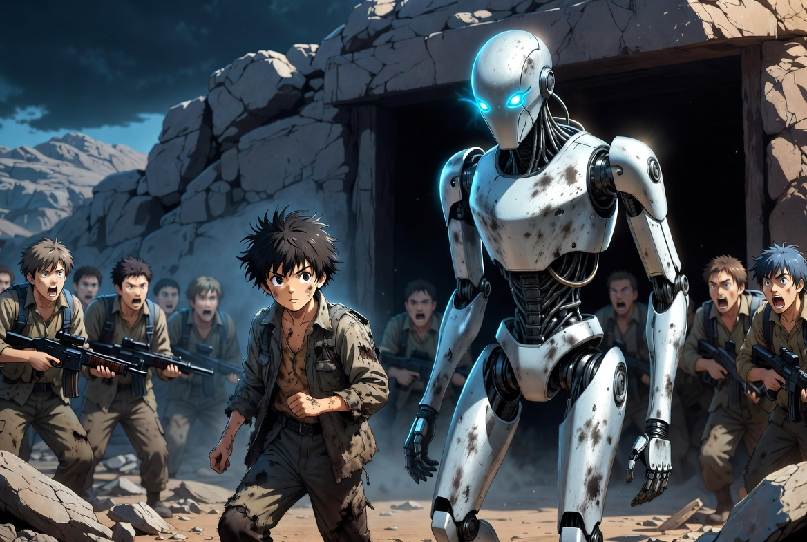
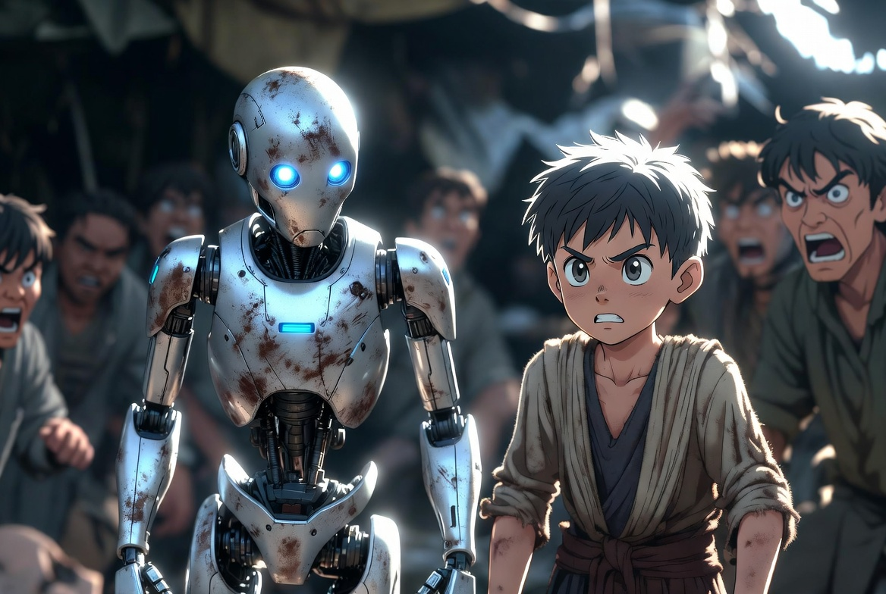
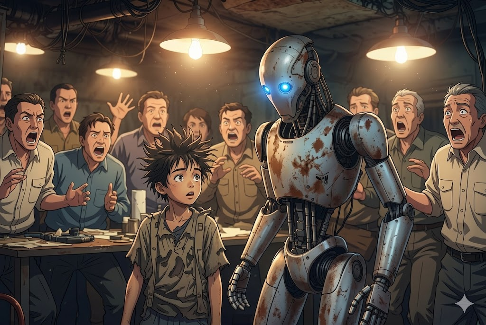

Llegando al asentamiento 0-125 y BIO los sobrevivientes logran visibilizarlo y piensan que 0-125 enloquecio, varios de ellos quieren negarles la entrada y al mismo tiempo BIO penso que seria una mala idea; Sin embargo 0-125 lo invita a entrar mientras las miradas de todos caen encima de ellos.
0-125 lleva a BIO al entro del asentamiento donde lo lideres de tal lugar se reunieron para discutir sobre el plan para recuperar el planeta en esto aparecen nuestro protagonista llevando al atencion de todos sobre si, les presenta a BIO y el panico se apodera de ellos sin embargo 0-125 les explica a todos q BIO es distinto a todos los demas y que su codigo no esta corrupto, a esto llaman al utlimo experto en software en el mundo el cual analiso y comprobo dicha declaración a esto BIO enseña su plan.